Hoy en el Centro Cultural San Martín, Sarmiento 1551, Buenos Aires, terminando el Festival Guitarras del Mundo, tocan desde las 21:00 : Javier Bravo (clásica y argentina), Manolo Yglesias (flamenco), y el Dúo Baroni-Osuna (música argentina). Gratis.
Una joyita: Marionetas, tango de Guichandut y Tagini, año 1928, en dos versiones excelentes (completas y con letra): por Carlos Gardel con guitarras (1929) y por Floreal Ruiz con orquesta de Aníbal Troilo (1944). (la versión de Gardel tiene algún problema, a los 30 segundos vuelve a comenzar; pero después sigue bien).
Vaya hoy, 12 de octubre, un silogismo defectuoso:
- Aquel que atrae el odio y la enemistad de los imbéciles, es un grande.
- Cristóbal Colón, Hernán Cortés (y Julio A. Roca, si a eso vamos) atraen el odio y la enemistad de los imbéciles
- Cristóbal Colón, Hernán Cortés (y Julio A. Roca, si a eso vamos) son grandes.
Y es sabido que en estos casos, la veracidad de la conclusión queda indeterminada: puede ser verdadera, o falsa; o -como probablemente sea el caso- parcialmente verdadera.
-
El rezo del Rosario: 31 días, 31 maneras -
Número 8
( por John Da Fiesole de Disputations; adaptación y traducción libre )
Hay una técnica para mirar los misterios del Rosario a través del cristal de las tres virtudes teologales: fe, esperanza y amor.
Simplemente meditamos el misterio de la manera habitual durante los primeros cuatro AveMarías, y después dedicamos dos Ave Marías para considerar cada misterio a la luz de la virtud - o la virtud a la luz del misterio.
Una posibilidad es dedicar el primer Ave María al pensamiento del misterio-virtud tal como se dio en María, y el otro a la meditación de qué significa eso ahora para mí. Por ejemplo, en el misterio de la Venida del Espíritu Santo en Pentecostés, puedo preguntarme cosas como :
-
5. Cómo sostuvo María con su fe a los demás discípulos ?
6. Cómo me sostiene a mí María con su fe ?
7. Qué esperanza guardaba María en su corazón después de la Ascensión?
8. Cómo comparto su esperanza ?
9. De qué manera el amor maternal de María por Jesús fue afectado por el poder del Espíritu Santo, al iluminar su conocimiento de la divinidad de su hijo?
10. Cómo es mi amor por Jesús, en su humanidad?
Un par de cosas a notar sobre estas preguntas. Primero, son preguntas sustanciales, teológica y espiritualmente. Acá las escribo en una línea para el consumo del púlbico, pero podría pasar una década antes de que hubiera llegado a terminar de plantearme la pregunta 9. En la práctica, lo que pasa con mi mente a menudo es algo más en la línea de, “Uhm, ahora toca la esperanza, a ver ... ” . Una pregunta tan rica podría llevar muchas pasadas sobre el misterio para llegar a tomar forma.
En segundo lugar, las preguntas requieren respuestas substanciales, teológica y espiritualmente. No podría contestar la pregunta 9 antes de encontrarme cantando el Salve Regina y besando el crucifijo.
Esto me trae de nuevo a algo dicho antes. El Rosario no es un rezo de veinte minutos sino una meditación para toda la vida. Los pocos momentos de unos pocos días que dedico en preguntarme si comparto la esperanza de María en su Hijo crucificado, resucitado y sentado a la derecha del padre, no están dedicados tanto a armar una respuesta discursiva sino más bien a dar al Espíritu Santo la oportunidad de moldear mi corazón a imitación de Maria (y por lo tanto de Jesús). Este método de rezar el Rosario es como un suave ejercicio de estiramiento, en todas direcciones, para mantener el corazón flexible y preparado listo recibir las respuestas que Dios quiera darme, cuando él quiera dármelas.
-
El ademán que desafía al cielo sólo puede ser imponente
como ademán último.
La blasfemia es, por definición, el fin de todo, incluido el blasfemo.
La esposa de Job habló con la voz del sentido común cuando dijo a su esposo: "Maldice a Dios, y muérete".
El poeta moderno, por algún extraño descuido, suele olvidarse de morir.
G. K. Chesterton
El hombre común
_ "Tomen-dice Clarín (o Pagina 12, o cualquiera) - acá tienen alimento para la indignación; (los diputados hicieron... el senador dijo ... el gobierno cree que ... Duhalde ... Bush . .. el PJ ... Menem ... Hadad... .. Aznar ... ). Indígnense... ya!"
Y nuestros progresistas psicoanalizados obedecen complacidos, y hacen lo único que saben hacer : indignarse.
Hace poco Google sacó un servicio de "Noticias" (Google News): un robot parsea las noticias recientes de los diarios online y arma una serie de páginas a modo de resumen y enlaces. Se me ocurre que un segundo robot, sin mucha más inteligencia, podría tomar las noticias políticas de nuestros diarios y generar automáticamente esos comentarios que el típico joven argentino tanto gusta de escribir y de leer.
Comprando recién unas empanadas; esperando, en una especie de bar, lindas mesitas de madera rústica; bien ambientado, si no fuera por la radio FM con la consabida locutora, y por otro detalle: cada mesa tenía un simpático jarroncito con un par de flores... de plástico. También en el mostrador había unos claveles... de plástico... creo.
Y esta duda es la que me dejó pensando... El temor
de haber juzgado mal a unas flores de verdad.
Y no es una gran
manifestación de inteligencia registrar desprecio por las flores de plástico,
ya sé...
Pero igual ... se me ocurre ahora que lo feo del asunto,
no viene tanto por el lado de que "uno puede llegar a creer que una
flor de plástico es una flor de verdad": el peligro (el pecado)
de estas imitaciones es que uno termina
sospechando que una flor de verdad acaso sea de plástico
(qué bien diría esto Chesterton!)
Y si uno puede llegar a creer en Dios, con sólo ver una flor...
-
- Yo no puedo ver a Dios sino en las cosas, soy demasiado gitano, ea.
Así esos jacintos amarillos, ahí sobre la mesa, al verlos de golpe al
entrar, tan sencillos, tan bien hechos, tan inesperados, yo me
acordé de Dios, creí en Dios....
Miradamescua, personaje de Juan XXIII (XXIV), novela del P. Castellani
-
El rezo del Rosario: 31 días, 31 maneras -
Número 7
- La primera, de parte del ángel "Dios te salve María .... bendita entre todas las mujeres".
- La segunda, de parte de Isabel "Bendito es el fruto de tu vientre"
- La tercera, agregada por la Iglesia : "Santa María, Madre de Dios... "
( por John Da Fiesole de Disputations; adaptación y traducción libre )
El Rosario es una combinación de oración vocal, meditación, y actividad corporal (si usamos las cuentas del collar para contar). Hay épocas, sin embargo, en que la meditación es imposible, tiempos de gran tensión o dolor, cuando apenas podemos concentrarnos para nombrar los misterios.
En tales momentos, la oración es difícil como necesaria. Un camino posible es retroceder en la historia del Rosario, hacia el primitivo Salterio de Nuestra Señora, que es simplemente las recitación de 150 Aves:
Hacemos la señal de la cruz, ofrecemos cualquier oración espontánea, y comenzamos a rezar los Ave Marías . Sin preocuparnos de Padre Nuestros, misterios, ni décadas. Estos son momentos en que nuestro cuerpo reza en nombre de nuestra alma, y es nuestra voz la que nos lleva a la la presencia de Dios, aunque nuestro corazón pesa demasiado para moverse. Es rezo vocal, una conversación donde derramamos nuestras tristezas sobre el Unico que puede actuar en nosotros con sólo escuchar.
Al mismo tiempo, por supuesto, también estamos hablando con Maria, y por medio de su corazón inmaculado podemos esperar con confianza que nuestra angustia sea llevada ante Dios y sanada. Tal confianza es, desafortunadamente, una cuestión de fe más bien que sentimiento; es esperanzada, pero no visible. Igual que Pedro en el mar, puede dudar y fallar; pero, igual que con Pedro, Cristo estará allí tomar nuestra mano y traernos seguridad. Y su madre, que de pie ante la cruz supo abrazar la voluntad del Padre (y que ahora no está menos unida a su voluntad ) también estará con nosotros.
Nota pedante:: Antes del siglo XIII, el Ave María se llamaba la Salutación Angélica, y terminaba con las palabras "y bendito es el fruto de tu vientre."; y según Santo Tomás, pueden distinguirse tres partes:
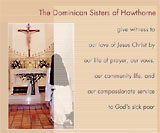 John presenta a las Hermanas Dominicas de Hawthorne. Son unas monjas norteamericanas, enfermeras, dedicadas a cuidar enfermos incurables de cáncer que no pueden pagar su tratamiento médico. Tienen un lindo sitio web .
Mis lectores culturosos ya se estarán preguntando si tiene algo que ver con el escritor Nathaniel Hawthorne, y ya se estarán contestando que no. Pues se equivocan; tiene que ver: esta orden (o congregación o apostolado o no sé qué) fue fundada por Rosa Hawthorne, hija del escritor, escritora también y conversa.
Estoy pasando un momento de depresión aguda. El registro de visitas (de páginas que tengo en otro host) me dice que:
-
con fecha y hora : 07/Oct/2002 11:59:20
desde la IP: 206.253.221.186
alguien entró a http://hjg.com.ar/ce/c01_2.html
desde la página http://www.caras.uol.com.ar/galeria/grupos/gp_00.htm
-
El rezo del Rosario: 31 días, 31 maneras -
Número 6
- La Anunciación: La mujer desposada con José, de quien nadie podía decir una palabra, ha concebido un niño! Y como si fuera poco, es el hijo de Dios! Eso es lo que se llama asumir la responsabilidad de formar una familia....
- La Visitación: María se va, y pemanece meses fuera. Un desposorio que no marcha de acuerdo a las costumbres...
- La Natividad. Un censo, justo para cuando el bebé está por nacer! Y el colmo: no hay lugar en la posada ! Mi esposa va a dar a luz al hijo de Dios en un establo ? No estoy cumpliendo lo que se espera de un esposo...
- The Presentation: Redimiendo al Hijo de Dios con un par de palomas... uno sabe que va a resultar más caro de lo que suena. Y viene el anciano a decirle a la joven madre, con toda gentileza, que su corazón será atravesado por una espada...
- Jesús encontrado en el Templo: He perdido a Jesús. He perdido a Jesús. No sólo perdí a mi hijo, perdí al hijo de Dios!
( por John Da Fiesole de Disputations; adaptación y traducción libre )
La palabra "gozosos" es poco adecuada para describir las honduras donde nos llevan (o nos debería llevar) la contemplación de los Misterios Gozosos, junto con la Virgen, con toda la humanidad y con toda la creación visible e invisible.
Pero por otro lado, podemos pensar que para San José los hechos fueron más bien causa de angustias y tristezas.
Como padre y esposo -nada inmaculado- me resultar fácil imaginar
los Misterios Angustiosos:
La letanía de San José lo describen con un varón "casto y justo .... prudente y valeroso ... obediente y leal".
Pero algo más que todo eso debe haber sido, para el tiempo
en que el niño Jesús volvía sano y salvo a Nazareth: uno
de los hombres más humildes que han pisado la tierra.
Una y otra vez, los hechos le habían mostrado sus propias limitaciones;
una y otra vez, Dios le había mostrado la inmensidad de Su cuidado
providencial. Y una y otra vez, José se había levantado y había hecho
lo que el Señor le pedía.
Por mi parte agrego:
Que la consideración de los sentimientos de José es efectivamente parte del devocionario católico; hay una devoción particular, Los dolores y los gozos de San José en la cual, durante siete domingos seguidos, se considera un "dolor" junto con el "gozo" que viene en seguida a modo de consuelo (Acá hay una versión poética, en décimas -ni muy buenas ni muy malas).
Que esta versión que trae John, además de venir enganchada del rosario, trae la ventaja de sernos más afín -creo- a nuestra sensibilidad: no nos interesa mucho -creo- que José resulte "consolado" en su exilio a Egipto por la caída de los ídolos (tradición que viene de un apócrifo, si no recuerdo mal); preferimos pensar que el mismo aprendizaje de José, en la obediencia y la humildad, de la providencia amorosa de Dios, es mejor "consuelo" de sus dolores.
Que esta enumeración de las tristezas (la otra cara de los Misterios Gozosos)
como todas estas devociones, puede perfectamente usarse sin necesidad
de asumir su "historicidad". Me refiero a que hay cuestiones que no sabemos
bien cómo ocurrieron, sobre todo con los dos primeros misterios:
En particular, no sabemos si la revelación del ángel a José es anterior
o posterior a la visitación a Isabel (ambos hechos están en
evangelios
distintos); al parecer, el hecho ocurrió después de que José advirtiera
el embarazo de María, pero esto pudo ser antes o después de la visitación;
o también durante... porque tampoco es claro si María fue sola a visitar
a Isabel (como supone acá John) o si la acompañó José.
Yo más bien tiendo a ubicar, como dolor de José correspondiente
al misterio de la Visitación, justamente el reconocimiento del
estado de su esposa y su casi-decisión de abandonarla...
pero en este caso no me queda nada para el primero.
En inglés:
Allá en St. Blog's Parish, (como en cualquier "comunidad" de weblogs) nacen nuevos weblogs y mueren otros. Esta semana Dylan suspendió calladamente y por tiempo indefinido el suyo (en etapa de discernimiento espiritual, al parecer); y Tim Drake se despidió con un post fuerte, planteando sus dudas sobre los aspectos más negativos del blogging: la vanidad personal, sobre todo; y también la formacìón de ciertos grupos afines, con más olor a secta que a comunidad. Un post interesante que fue respondido por otro post MUY interesante de TS O'Rama, recomentado a su vez por Steve de Flos Carmelis. Recomendado.
En el día de Nuestra Señora del Rosario:
-
El rezo del Rosario: 31 días, 31 maneras -
Número 5
- En el Huerto, el Hijo de Dios es abandonado por sus discípulos
- Pilatos accede a hacer azotar a Jesús, que ha sido rechazado por los líderes religiosos
- La burla de la coronación de espinas del "rey de los judíos", por parte de los soldados romanos, muestra al Hijo de Dios ridiculizado por los poderosos.
- Jesus arrastra la cruz por las calles de la ciudad que lo había recibido triunfalmente unos días antes; el Hijo de Dios también es ignorado por el pueblo elegido.
- En el Calvario, el Hijo de Dios es olvidado por el mundo.
( por John Da Fiesole de Disputations; adaptación y traducción libre )
De los tres grupos de misterios, los Misterios Dolorosos son los que tienen más dramastismo. Relatan la historia de Jesús durante las últimas horas de su vida: desde la soledad del huerto de Getsemaní hasta la soledad de la cruz.
Los Misterios Dolorosos, a diferencia de los otros, siguen un progresión que crece en dirección a la culminación: la Cruz.
Podemos entonces aprovechar esto en nuestro rezo, de manera que la meditación de cada uno de estos misterios se construya sobre la base del misterio anterior.
Por ejemplo:
Esta es su pasión dolorosa; esta es -en la economía salvífica decretada por la voluntad del Padre- la garantía de la misericordia de Dios, que desciende sobre todos los que la invocan desde las profundidades.
Por mi parte, agrego:
Verdaderamente resulta interesante observar las "progresiones" que se dan entre "misterios", que
no son eventos "sueltos" de la vida de Jesús.
Para empezar, recordemos antes que, si bien uno reza cinco misterios de un "grupo", cada día, los mismos
grupos siguen un orden (primero los Gozosos, después los Dolorosos, finalmente los Gloriosos ) .
La distribución de los grupos por día de la semana se hizo (supongo yo) de manera de enganchar
el viernes (día penitencial) con los misterios doloros; y el sábado (día de la Virgen) con los gloriosos.
A mí esta progresión gozo-dolor-gloria ya me parece sugestiva ... parece ser una sucesión que está en el fondo de tantas cosas (desde los movimientos de una sonata o sinfonía, hasta tantas historias )...
Después, si consideramos los quince misterios en conjunto, vemos que tienen un orden cronológico. Esto parece trivial; pero si lo unimos con lo anterior, (la sucesión gozo-dolor-gloria) no lo es tanto.
Y esas progresiones también se dan internamente dentro de los grupos
de misterios. Acá John nota una progresión "acumulativa" (que se da en términos
de soledad, abandono, aislamiento de Jesús) dentro de los misterios
dolorosos.
Es cierto. Pero también podría hablarse, creo yo, de una progresión
"patética" : por ejemplo, los misterios gozosos van ganando en
inquietudes (la profecía de Simeón en el cuarto, la angustia
de la pérdida en el quinto), como si fueran preparando
el dolor que viene; y los dolorosos, van creciendo en el patetismo
-de la mano de la progresión observada por John acá-, terminando
en el más negro dolor.... como esas novelas (El señor de los Anillos?)
donde los desastres se van acumulando hasta el punto en que todo
parece perdido.... Hasta que llega la explosión de la victoria,
y una alegría "gloriosa", que crece cada vez más (el tutti de la sinfonía),
una alegría que tiene una fuerza, una grandiosidad, un "espesor"
muy diferente del gozo primario inicial...
Todo esto debe resultar un poco oscuro, y es muy tarde ya -como dice el tango- y todavía no recé mi rosario... Seguimos tal vez otro día.
Leo el sábado a la tarde en el Clarín que al mediodía había arrancado la Peregrinación Juvenil a Luján. Me había olvidado, y pensé en poner algo en este weblog, como información... Deberíamos contar primero, para los de afuera, que la devoción a Nuestra Señora de Luján es la principal devoción mariana en Argentina; y que su santuario está ubicado a 70 km de Buenos Aires. Ahí hay una basílica imponente, que guarda la imagen diminuta de la virgen (una figura de terracota protagonista de un milagro tan humilde como la misma imagen hace casi 4 siglos), y que es centro de peregrinación de los argentinos.
Allá por 1975 se agregó una forma de peregrinación particular ... caminando en grupo; se sale de las afueras de Buenos Aires (Liniers), el primer sábado de octubre al mediodía, para caminar más de 60 kilómetros y llegar a la madrugada del domingo. Claro está que esto roza la proeza física -por eso también los peregrinos son en su mayoría jóvenes- y algunos hacen sólo una parte del recorrido a pie.
A pesar de todo, esta práctica tuvo un crecimiento asombroso, y rápidamente se convirtió en el hecho religioso más importante de la Argentina y la manifestación popular más destacable del país. Los últimos años, el número de peregrinos han rondado el millón. Un número que resulta más increíble aún si uno conoce la escualidez de religiosidad católica argentina.
Bueno.
El caso es que yo nunca
había ido a esta peregrinación; en gran parte, por cierta
alergia a religiosidades multitudinarias, sobre todo
si son "jóvenes", y argentinas. Pero esta vez, me dije
que no podía escribir un informe en mi weblog desde
afuera; (y además, con 35 años, se supone que estoy
terminando la juventud... no ? ). Y si bien
la marcha ya había empezado, yo tampoco iba a pretender
hacer el recorrido completo, mi estado físico no da
para eso. Entonces se me ocurrió algo mucho más modesto:
tomar un omnibus hasta General Rodriguez (a 20 km
de Luján) y compartir el último tercio de la marcha...
Peor es nada, me dije...
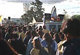
Y así -con algunas dudas- me puse las zapatillas
más cómodas y rotosas, agarré la campera, me encomendé a la virgen, y salí.
Además de varias incertidumbres sobre el asunto, me retraía el hecho de estar
resfriado con amagos de fiebre; pero la noche estaba templada y despejada.
Son más de las 21:00 cuando tomo el 52 ("La lujanera") en
Plaza Once y me bajo en "el puente", en las afueras de G. Rodríguez.
El lugar es más inhóspito de lo esperado; la ruta por
donde pasaba la marcha queda algo lejos, me dicen, y no hay colectivos.
Fugaz sentimiento de leve terror
(prodigo los adjetivos para salvar mi dignidad de hombre
adulto -joven pero adulto-; tener en cuenta que estaba solo,
que no tenía trasporte de vuelta, y etc). Paro un remise
destartalado que me acerca (pero eran menos de 10 cuadras).
Mientras llego caminando a la ruta 5, -ya se empezaba
a apreciar el clima de la peregrinación- mi duda era cómo
iba a pasar las proximas horas: mi información era que
el grueso de la marcha pasaba a las 2 o 3 de la mañana,
con lo cual yo me imaginaba dos opciones: o bien
esperar hasta esa hora (pero no sabía si el ambiente
sería lo suficientemente acogedor-seguro para eso, sin
contar el aburrimiento); o bien prenderme con los caminantes
adelantados (pero no tenía mucha idea de cuántos serían,
si irían grupitos aislados, etc).
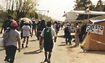
Cuando llegué a la ruta me llevé una grata sorpresa
(y vi enseguida que las dos opciones eran factibles). La escena era impresionante:
mucha gente y mucha actividad. Por un lado, marchaba continuamente
una columna de gente, mucho mayor a lo que me imaginaba.
Por otro lado, muchas
parroquias (tener en cuenta que mucha gente va con su parroquia,
con sus propia organización en cuanto a comida, trasporte de vuelta, etc)
habían acampado provisionalmente, y llamaban
por parlantes a los suyos. Al parecer, este es el último
punto donde se para a descansar, para encarar el último tramo.
A esta altura (más de 40 km caminados) todos están extenuados,
y se ve gente acostada con las piernas en alto, masajes, etc.
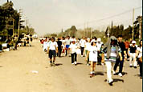
En fin, el asunto tenía mejor color del que yo esperaba,
el ambiente era perfecto -me acordaré siempre de esa escena,
con reminiscencias de lecturas de guerra: el regimiento
que acampa, etc-; y yo no tenía más preocupaciones que
decidir cuándo empezaba a caminar.
Si a esto le sumamos que la noche estaba hermosa,
que no había cantores parroquiales molestando con sus guitarras
y sus amplificadores saturados, y que buscando un poco pude
agenciarme de un choripan con una coca, yo estaba en la gloria.
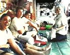
Y así, después de un ratito, arranqué la caminata bajo las estrellas.
La gente, bastante silenciosa (debido al cansancio, probablemente)
y -otra buena noticia para mí- en total mezcla:
grupitos minúsculos, parejas, matrimonios con
bebés, alguna silla de ruedas; alguna que otra monja.
Muy buen ambiente humano. Alegría calma. Caras cansadas,
algunas doloridas; muchos caminan con dificultad. A mí
me avergüenza un poco, sentirme fresco como una lechuga,
y trato de disimularlo.
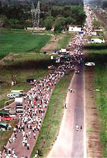
Como dije, la columna de gente era abundante; más densa que
la que se ve en la foto áerea (esta foto, como todas
las demás, son de peregrinaciones anteriores, y las saqué
de la web).
{kind=link}
Se charla de cualquier cosa, aunque no mucho.
Varios gritan para animar: "Vamo que falta pocooo; aguante!".
Mucha gente humilde; mucha cumbia villera. "Vamo, vamo, che;
vamo que e'todo sicológico, e ! no duele, no duele, no duele!!".
Velocidad de marcha normal, variada; yo trato de ir algo más
lento que el promedio; a veces me pasa algún
grupito rezando un rosario. La ruta está iluminada,
salvo un trecho de dos o tres kilómetros de oscuridad
casi total; no hay luna.
Yo me he rezado un rosario, para empezar; después,
un Ave María por cada conocido que uno tiene, y por todos
los que vienen alrededor. Todo el entorno es conmovedor
y yo estoy absurdamente contento.
No se puede comparar mi esfuerzo con el del resto; aunque
al final estoy cansado, y los pies me empiezan a arder
y las piernas a doler, sé que llego sin problemas...
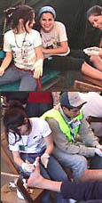
Al borde de la ruta, ofertas varias: bebidas, baños
(50 centavos), bastones; también ofrecen trasporte
para los que no puedan más ("Remise a la basílicaaa!
Son tres pesitoos! Ya salimos!").
{kind=link}
A cada trecho hay un "puesto sanitario", atendido por grupos parroquiales, para masajes, vendajes, toma de presión...
En el anteúltimo puente, hay un grupo de curas que confiesan (se ven desbordados; con semejante cantidad de gente, no es mucho decir; pero igual es buena noticia); otros reparten estampitas.
La mayoría de los caminantes son efectivamente jóvenes
-entre 20 y 25, diría-, pero hay viejos y chicos.
Otro buen signo es -cosa que verificaré después en Luján-
es que la proporción de varones y mujeres es pareja...
Un pibe se queja: "Aaahhh... la pqlp ... ! .... es la
última vez que vengo !" ... (acentuando la palabra "última");
sus compañeros ríen.
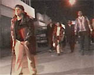
Pasado el último puente de Luján (salen a obsequiarnos
mate cocido), entramos en la ciudad. Ya aparecen los vendedores
de los típicos y feísimos "recuerdos" religiosos.
Impresiona la columna que va llenado la calle silenciosa, parece
que estuviéramos tomando una ciudad por asalto.
Impresiona también pensar que -son las 3 de la mañana-
esa columna debe tener más de 20 kilómetros de largo.
Ese último trecho es particularmente difícil (algo para mí,
no quiero pensar para el resto) porque uno cree que
"ya llegó", la Basílica se ve a la distancia... pero
quedan casi tres kilómetros. Son muchos los que se ayudan con
bastones. El cielo se ha nublado.
Adelanto a un hombre mayor, con dos señoras... El las alienta:
"Hagan como yo, no miren adelante, miren el piso.
No piensen cuánto falta. Así, pasito a paso, llegaremos".
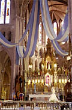
Y llegamos. Nos acercamos a la Basílica, no por el frente (lástima)
sino por atrás, y entramos por el costado.
Adentro, un caos. Muchos tirados en el suelo, sentados, recostados y algunos durmiendo. Cruzan frecuentes camillas con gente desmayada. La circulación, apretada, lleva frente al altar, donde han ubicado (con buen criterio) a la imagen de la Virgen, más cercana que de costumbre. Se ven muchos lágrimas; y no de dolor; un morocho solloza como un chico, y dice no sé qué de "la virgencita".
Cuando pasamos por delante de la imagen, el cura nos empapa (también con buen criterio) con agua bendita.
Salgo.
Son las 3:45 y las parroquias se van agrupando en la plaza.
{kind=link}
Anuncian misa y vuelvo a entrar. Yo también (típico en mí) tengo amagos de mareos, pero con sentarse en el suelo (han sacado los bancos de la basílica), asunto arreglado.
Por primera vez escucho misa y comulgo ... a las 4:00 de la mañana!
Vuelvo a salir y me recuesto sobre el cemento de la plaza. El cielo ha despejado,
y está por empezar a amanecer.
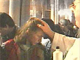
Por los parlantes siguen advirtiendo: "Por favor, les pedimos
que pasen delante del altar, saluden a la virgen, pero
no se detengan; hay mucha gente esperando".
{kind=link}
Al lado mío, un chico con los rasgos y la lengua "villera",
comenta a sus amigos
-"Y ? Dejá de joder! Y vale la pena o no vale la pena?
Eh? Todo por un segundito nomá! Te caminaste todo, y pasá' por ahí,
y un segundito nomá, y el tipo [el cura] te dice 'ya está', y... vite
la paz, loco, vite la paz que te baja ... ? E'increíble, loco, e'increible"
Y los amigos le dan la razón.
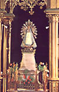
Otra misa a las 5:30. Sermón tan pobre como el anterior...
Ese intento torpe de enarbolar el "lema" de la marcha
(ya de por sí bastante mediocre: "María, abrázanos fuerte: queremos
un país de pie") y pretender que la gente se entusiasme
repitiendo eso... Toda esta peregrinación tiene el sabor
inconfundible de esa cosa religiosa auténtica (en el nivel más primario
de la palabra; no necesariamente 'cristiano') ;
a veces -y es lamentable- el clero tiene tanto éxito en "integrarse"
a estas religiosidades populares como el que tienen
ciertos adultos tontos cuando quieren hacerse los simpáticos
para integrarse a los juegos infantiles.
{kind=link}
Bueh... no podía yo dejar de quejarme de algo... Hay que decir, sin embargo (además de reconocer todo el esfuerzo
de curas y el personal que trabaja, toda la noche, para que esto funcione:
atender a un milón de personas no es fácil) que el asunto
logra ese difícil equilibrio :
el de integrar la devoción popular al alma de la religiosidad,
resistiendo a sus vicios (la superstición, sobre todo);
cosa que, a pesar de todo, parece indicar que la religión está viva.
Y eso, en buena parte,
debe ser mérito del clero que yo tanto suelo
criticar (con más soberbia que caridad).
Bueno... Sí, pero no principalmente ...
Al fin y al cabo, si es cierto que Ella detuvo
una carreta porque quiso quedarse acá, para algo debió ser. Y ese milagrito
probablemente estaba ordenando a este otro : el de alimentarnos
a los argentinos en nuestra religiosidad; y no sé cual es milagro más grande.
Como sea:
PS: Algunas de las imágenes las saqué de un video en flash que armó el año pasado Clarín a modo de informe; el video (además de pesar 1.6 Mb, y no tener indicador de avance de carga: hay que esperar) tiene algunas imágenes lindas, pero en general es pobre, hecho por gente que evidentemente sabe algo de diseño de imagen, pero cero de sensibilidad religiosa popular; y de conocimientos religiosos estrictos no hablemos... Una perla : en un punto dice algo como que "en la marcha no hay distinción de ricos y pobres, ni de fieles y laicos" !!!